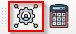

Registration and Settings
Registration
The toolbox is free to use, but you should register an email address to facilitate computation of large areas as the results may have to be sent to the email address.
To register your email address and obtain a free account, select the settings icon highlighted . This will open the settings dialog.
{kind=link}

Figure 1: Settings dialog
To register, click the Step 1:Register button. This will lead you to the MISLAND-Africa registration page. Provide all the
details required on the platform and signup.
Note
If you have already registered on the platform, you can proceed to login on QGIS.
Login
To login, click on the Step 2: Login button. This will open the Login dialog.

Figure 2: Settings with login button highlighted
Provide your email and password to login. Upon successful registration, your details will be saved by QGIS.

Figure 3: Login Dialog
Reset Password
If you wish to reset your password, click the Reset Password button. This will open MISLAND-Africa reset password.
Figure 4: Settings dialog with reset password button highlighted
Proceed as guided on the platform to recover your account.